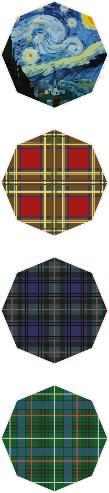

Die Krone ist der Punkt, an dem die Stangen oben zusammenlaufen.
Unten enden sie im Schieber, mit welchem man den Schirm aufspannen und wieder zusammenklappen kann.
Die Federrasten halten den Schieber in den jeweiligen Positionen.
Mit der Kugelarretierung kann der Stock bei Teleskopschirmen eingefahren werden.
Die Kugelspitzen am Ende der Stangen halten den Bezug des Daches fest.
Bei der Aufteilung des Schirmdaches dominieren acht-segmentige Modelle.
Doch auch sechs, zehn und zwölf Segmente sind häufig anzutreffen.
Mit steigender Segmentzahl wird der Schirm immer runder und stabiler, allerdings auch schwerer.
Die Vielfalt bei den Stoffmustern ist grenzenlos.
Von einfarbig bis van Gogh kann heutzutage alles auf das Schirmdach gedruckt werden.
Klassiker sind schottische Muster, die vor allem bei hochwertigeren Modellen beliebt sind.
Beispiele sind „Royal Stewart“, „Black Watch“ und „Hunting Stewart“,
die die Muster schottischer Familienclans darstellen.


Auch die Schirmform lässt sich verändern.
Manchmal um den Schirm für bestimmte Anwendungsbereiche zu optimieren, manchmal nur des Aussehens wegen.
Glockenschirm: Durch seine Form bietet er Schutz vor Regen und Wind.
Da er sehr weit über den Kopf geht, ist er meist durchsichtig.

Pagodenschirm: Diese Form ist der Eleganz des Romantik-Stils
nachempfunden.
Pagodenschirme sind meist Regen- und Sonnenschirm zugleich.

Doppelkappenschirm: Die obere Kappe leitet effektiv den Wind am Schirm
vorbei,
wodurch dieser auch bei starkem Wind stabil bleibt.

Wagasa: Ein traditioneller japansicher Ölpapierschirm.
Der Schirm besitzt eine gerade Fläche.
Er wurde durch westliche Schirme abgelöst, man findet ihn meist nur noch in Cocktailgläsern.

Assymetrischer Schirm: Die Fläche des Daches ist an einer Seite
vergrößert.
Anwendung findet er in der Gastronomie, da der Schirm neben dem zu schützenden Tisch stehen kann.

Doppelschrim: Zwei Schirmdächer, die zu einer Halterung zusammenlaufen.
Somit finden zwei Personen darunter Schutz vor Regen.